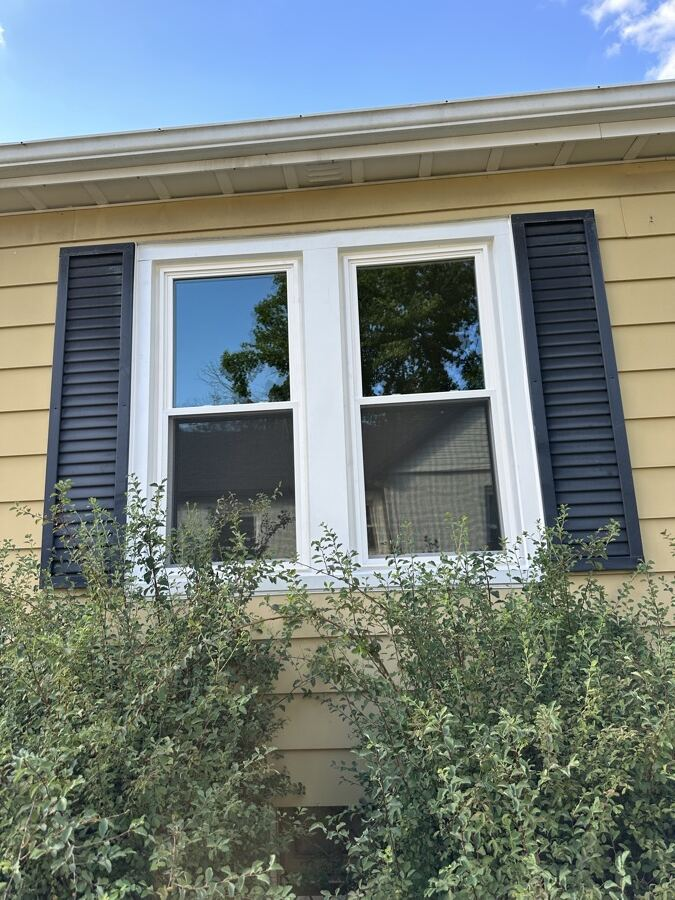

Double-hung
Two sashes that both slide vertically, so you can vent from the top and keep a lower sash closed over a radiator or a sill full of plants. Both sashes tilt in for cleaning from inside the room.
The most common replacement in central Indiana housing stock, and the style that reads correctly on almost every colonial, ranch, and four-square in the metro.
- U-FACTOR
- 0.27 (0.20 triple)
- BEST FOR
- Bedrooms, street-facing walls
- GRILLES
- All three patterns